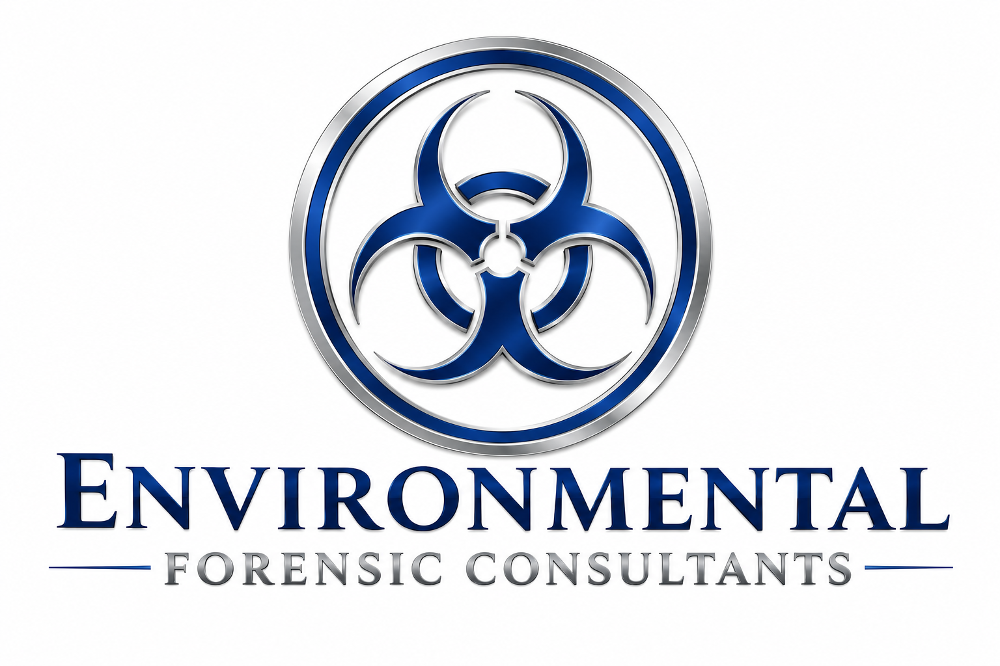

Professional Restoration & Environmental Consulting
Environmental Forensic Consultants Inc. (EFCI) provides science-based environmental consulting, investigation, and compliance solutions designed to protect people, properties, and organizations.
Contact Us
Environmental Forensic Consultants specializes in environmental investigations,
restoration consulting, moisture mapping, contamination assessments,
expert reporting, and project management for residential, commercial,
and industrial properties.
Our mission is to provide accurate evaluations, dependable recommendations,
and professional consulting services that help clients make informed decisions.
Please visit our school Phoenix Academy where we provide professional industry training. We offer IICRC Certification Courses, Asbestos Training, and OSHA Safety Courses for restoration, environmental, and safety professionals.
To view our complete course schedule and register for upcoming classes, visit the Phoenix Academy .
Office Email: Britni@envci.com
Office Phone: (623) 687-7933
We appreciate your feedback. Click the QR code below to leave us a review on Google.
Scan the QR code or click the image to leave us a review on Google.